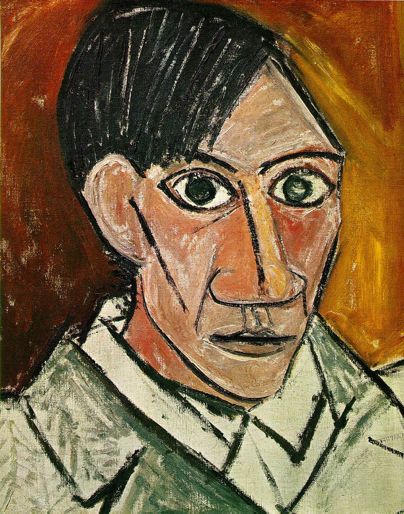
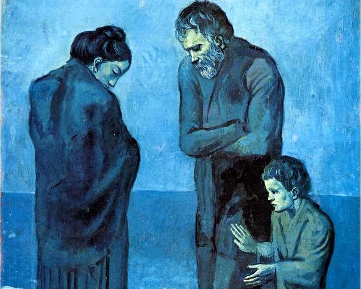
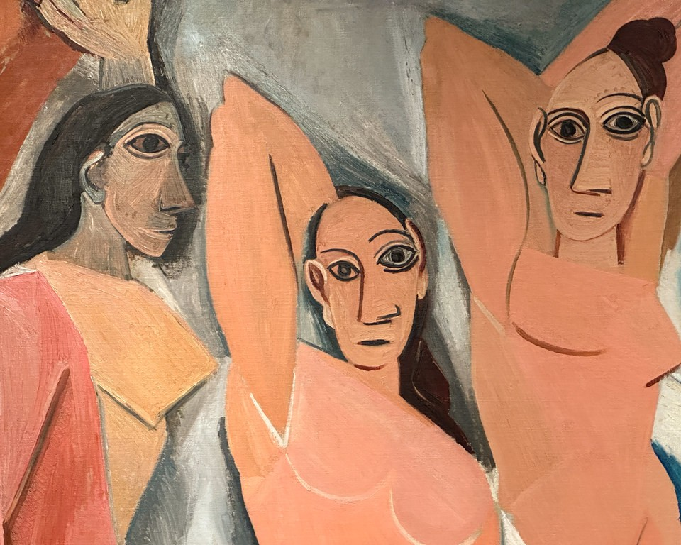
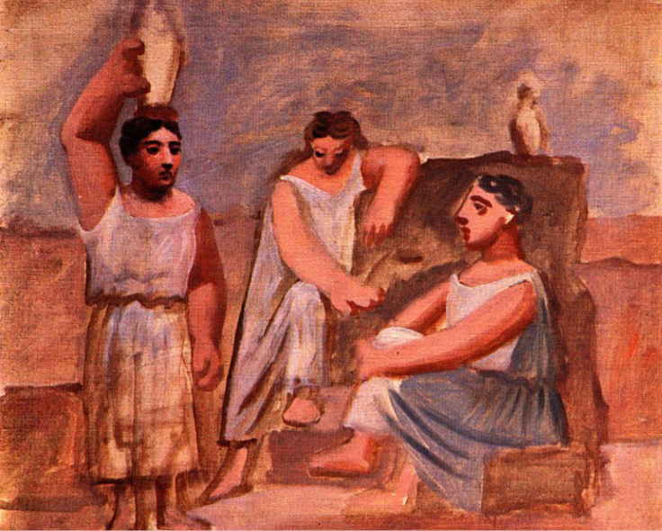

Pablo Picasso (Málaga, 25 ottobre 1881 – Mougins, 8 aprile 1973) è stato uno dei più grandi e influenti artisti del XX secolo, noto per la sua costante innovazione e per aver rivoluzionato l’arte moderna. Fin da bambino mostrò un talento straordinario, sostenuto dalla madre. Dopo essersi trasferito a Barcellona nel 1895, studiò brevemente alla Royal Academy of San Fernando di Madrid, ma preferì formarsi autonomamente osservando altri artisti. Nel 1901 si trasferì a Parigi, dove entrò nei circoli bohémien e sviluppò diversi stili pittorici distinti, sperimentando continuamente nuove forme espressive.
Lo stile di Picasso si divide in tre periodi:
Successivamente, l'artista esplora linguaggi vicini al Surrealismo e continua a sperimentare fino agli ultimi anni.

| Periodo Blu | Periodo Rosa | Periodo Classico |
|---|---|---|
|  |
 |
 |
| Poveri in riva al mare | Les Demoiselles d'Avignon | Tre donne alla fontana |